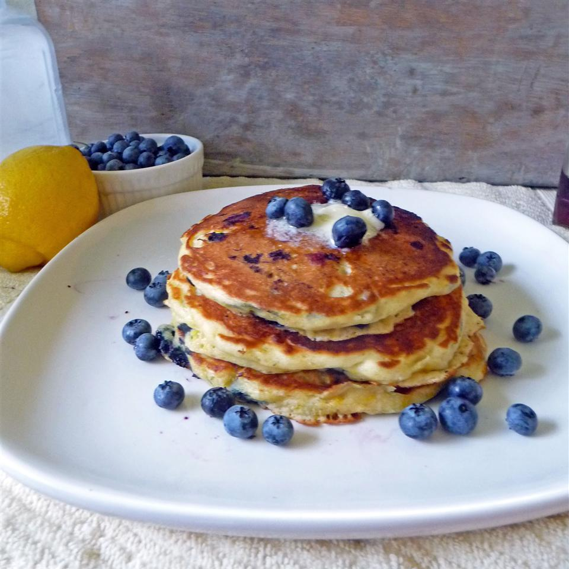

Fluffy Pancakes

The most delicious pancakes
Tall and fluffy. These pancakes are just right.
Topped with strawberries and whipped cream, they are impossible to resist.
Ingredients
- ¾ cup milk
- 2 tablespoons white vinegar
- 1 cup all-purpose flour
- 2 tablespoons white sugar
- 1 teaspoon baking powder
- ½ teaspoon baking soda
- ½ teaspoon salt
- 1 egg
- 2 tablespoons butter, melted
- cooking spray
Steps
- Combine milk with vinegar in a medium bowl and set aside for 5 minutes to "sour".
- Combine flour, sugar, baking powder, baking soda, and salt in a large mixing bowl.
Whisk egg and butter into "soured" milk. Pour the flour mixture into the wet
ingredients and whisk until lumps are gone.
- Heat a large skillet over medium heat, and coat with cooking spray.
Pour 1/4 cupfuls of batter onto the skillet, and cook until bubbles appear on the surface.
Flip with a spatula, and cook until browned on the other side.
Nutrition Facts
Per Serving: 230 calories; protein 6.4g; carbohydrates 32.7g; fat 8.2g; cholesterol 65.4mg; sodium 649.6mg.
Return to main page